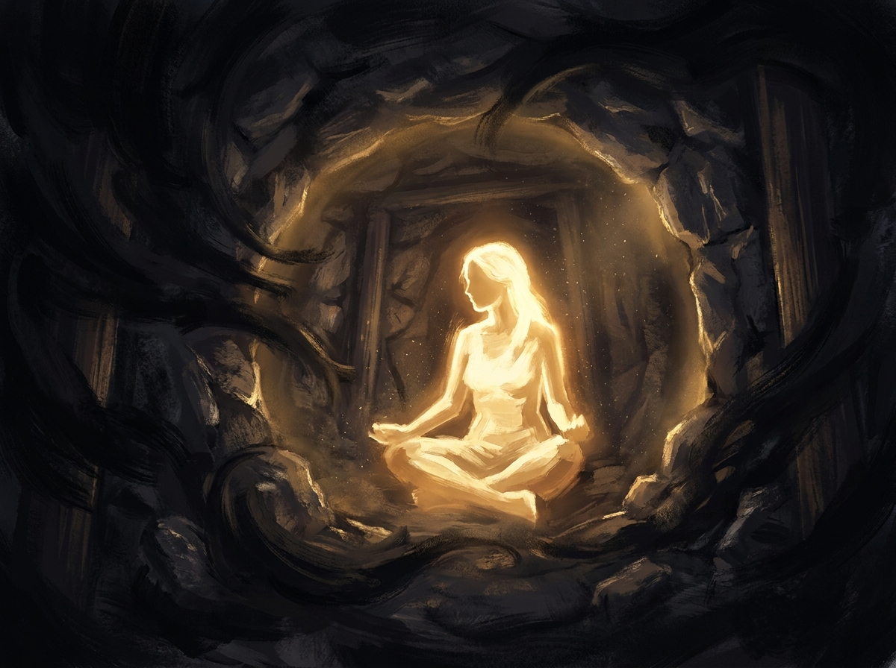

You have said yes
when you meant no.
Not once. Many times. You said yes to the relationship that was consuming you because they seemed to need you. You said yes to the version of success that required you to perform instead of tell the truth. You said yes to carrying someone else’s darkness because you thought that was what good people do. You said yes because the argument for yes was so sophisticated, so reasonable, so wrapped in the language of love or duty or wisdom, that saying no felt like a cruel thing to do.
Every single one of those yeses was the darkness getting in.
Not darkness as metaphor. Not darkness as a poetic stand-in for a rough patch. Darkness as an intelligent, adaptive, systematic force that has a playbook. A playbook it has been running on human beings for millennia. And the reason it keeps working is not that humans are weak. It is that almost nobody has seen the playbook.
I have seen it.
I saw it in a single night, in ceremony, when the darkness came for me in sequence. Body first. Then mind. Then emotions. Then Soul. Six distinct strategies, each more intelligent than the last, each designed to exploit a specific human vulnerability. And by the time dawn came, I understood something that changed everything I thought I knew about light, about free will, and about what it actually costs to choose.
This is not a spiritual memoir.
This is a field report on how darkness operates as a system.
And every hook it used on me that night is the same hook it is using on you right now, in broad daylight, wearing a face you trust.
Chapter I
The Architecture of Darkness
We are in the middle of darkness. All of us. And all our job, initially, is to find our own light. It is hidden in the darkness, in matter itself, in what our bodies are made of, in what the darkness takes up shape and form.
Step one is really, really learning how to discern and recognise what is darkness. Having this aspiration for light, and then just choosing light again and again. That is where it begins.
Here is what nobody tells you about darkness. It is not chaos. It is not random. It is not the absence of something. It is a force with its own intelligence, its own strategy, and its own design. And it is patient beyond anything you have encountered.
The darkness does not need to win in one move. It does not need to convince you to do something terrible. It does not need you to become a bad person. All it needs is a crack. One small opening. One moment where your awareness drops. One place where your boundary softens. One question you entertain for just a second too long. That is enough.
Because the darkness does not enter through your worst qualities. It enters through your best ones. Your curiosity. Your compassion. Your desire to understand. Your willingness to hold space for someone else’s pain. Your intellectual sophistication. Your very goodness.
That is the part that makes it dangerous. If it came wearing the face of evil, you would slam the door. So it comes wearing the face of your own virtues.
And it targets the layers of the human being in a specific order, for a specific reason. This is not random. This is architecture.
The body first. Because the body is the outermost wall. If the body consents, if the body opens, the darkness gets physical access to this realm. It can take form. It can manifest. The body is the gateway between the subtle and the material.
The mind second. Because the mind is the instrument of engagement. If the mind engages, if it starts asking questions, if it opens a conversation, then the darkness has a channel. Not just to enter, but to expand. Through the mind, it can reshape your reality, rewrite your narrative, redefine what you believe is true.
The emotions third. The vital layer. The feelings. Because this is where most humans are completely unguarded. We have been taught that our feelings are sacred, that following them is authentic, that opening our hearts is always the right thing. The darkness knows this. It knows that the emotional body is the least defended layer in most human beings. And it uses your own emotional intelligence against you.
The Soul last. Because the Soul is the innermost thing. The psychic being. The part of you that is actually Divine. If the darkness reaches the Soul, game over. Not through persuasion this time. Through force. Because by the time it gets that deep, it is done being subtle.
Body. Mind. Emotions. Soul.
That is the sequence.
That is the architecture of attack.
And I watched it happen in real time, across a single night.
Chapter II
The Battle for the Body
For me, the darkness first came for my body.
I remember a kind of pain in the abdominal region, and immediately the ask was that whatever this heaviness is inside me, whatever this darkness, I could just birth it out and I could just let it go.
That was the first stand I took.
I said I would never ever use my womb for birthing darkness. My womb was not for the darkness. My womb was only for birthing things of light.
I kept saying no.
I kept saying no.
Whatever it is, I will transmute it inside of me, but I will never give it to the darkness to use.
I did not want to birth demons. I did not want to birth beings that would then cause harm to others. I did not want to bring more darkness into this realm, onto this planet. If at all I was going to be used for birthing, it was only for light.
I told the Mother, “Mother, you will not use me for this.”
I actually said no to the Mother. And I said, “You will find other daughters who will do this, but I am not consenting to this anymore. I will only be a daughter of the light. I will only bring light into this realm, and I reject everything else.”
I think, with all of this rebirthing and womb healing in the spiritual circles, in the breathwork and plant medicine community, somewhere there, if we are not conscious, careful, discerning strong women, we might be releasing dark things into this realm. Everything you release might take form, and it becomes your responsibility to transmute it into light.
That is your work: just sit with it inside and transform it into light, because every bit of inner darkness has a corresponding light principle. You take any lower nature vibration that is dark, that has not yet seen the light, and instead of accepting it and owning it, you just convert it. That is the alchemy, that is the power you have.
That was a call I made: I am not going to do any more birthing of darkness through my womb.
The body refused access.
The first wall held.
So the darkness moved inward.
Chapter III
The Battle for the Mind
Once it realised it could not come for my body, that my body was not going to give consent, it came for my mind.
I could see how it was trying to gain access. It was like this huge force, completely dark, completely devoid of any light, just all-consuming and trying to consume everything in its way and just become bigger and bigger just by consumption. It was trying to find a breach into my mind because, again, an entry into my mind would have allowed it to expand into my reality and then to consume my reality and lead that reality into nothingness and destruction.
It kept trying to breach my mind. And I kept battling with just that one word: no.
That was the battle the entire night after it attempted to take the womb. The entire night was a battle for the mind. Eventually it became a battle for the Soul, but that was much later, towards dawn.
The battle for the mind was the hardest. The hardest.
But before I describe how it attacked, you need to understand why the mind is such a vulnerable target.
The mind is a very interesting instrument. It is very curious. The mind wants to learn, and learning is how it evolves by accessing newer and newer information. That is food. Like, for the body, how physical food, matter itself, gives it life force. For the mind, information is food. It seeks information so that it can grow, so that it can become bigger, so that it can expand, so that it can become stronger, and can nourish itself and evolve. The mind is always seeking information and knowledge. The mind is always asking why.
Now, the darkness knows this. And in fact the darkness knows your mind sometimes even better than you do, because we go through our days in complete unconsciousness sometimes. We are not even conscious of all the thoughts that are coming into our mind, all the different things, all the actions, all the behaviours that we are then taking based on those thoughts. We are so unconscious throughout the day. Most humans go through the day like zombies. Instagram and TikTok and Facebook and social media have made it worse. It allows us to be more unaware and more unconscious as we endlessly doom scroll.
The mind is always seeking, but you can either seek with conscious awareness, or you can completely be oblivious to that. The darkness outside of you knows everything that is going on in your mind way better than it understands the body.
And so, once it had access to the battlefield of the mind, it began deploying its hooks. One after another. Each one calibrated to a different vulnerability. Each one more sophisticated than the last.
Chapter IV
The Six Hooks
This is the taxonomy of the darkness. These are the six strategies it used on me that night, in sequence. And these are the same six strategies it uses on every human being, every day, in forms so ordinary you do not recognise them as attacks.
Hook One: Curiosity
This is the hook that gets the overthinkers. The intellectuals. The people who believe that understanding something is the same as overcoming it. You think if you can just understand why you are anxious, why the relationship failed, why your father was the way he was, you will be free. You will not. Understanding is not freedom. Sometimes understanding is the door you hold open while the thing walks right in.
It first tried to show me how it was created, and with that it seemed as if I was getting enmeshed and engulfed in the darkness, sucked into the quagmire like quicksand, and in doing so was opening up the doors of my mind because I wanted to understand why the darkness had happened. But that is what would have allowed the darkness entry, so I closed that door. I did not give a fuck. I did not care why the darkness was created. All I knew was my purpose: a battle for my body, done. I battled for my mind. I said this mind would be made up of only light and only light and only light. The only thing that will exist in this mind is higher and higher grades of light.
“I am not interested in knowing your story.”
Then, after that, it kept trying to pull me into that loop of trying to understand why it was created, to see how it was created, because if I began to acknowledge how it was created and that it existed, then I could get pulled into it and become a part of it. I said no to that.
The principle: Engagement is entry. The darkness does not need your agreement. It needs your attention. The moment you start asking why, you have opened the door. Not every question deserves an answer. Some questions are traps dressed as curiosity.
Hook Two: Temptation
This is the hook that gets the ambitious ones. The ones who know they are meant for something big but have not gotten there yet. The darkness shows you the shortcut. It shows you how easy it would be if you just played the game the way everyone else plays it. Manipulate a little. Perform a little. Tell people what they want to hear instead of what is true. You will get there faster. The catch: you will arrive as someone you do not recognise.
Then, very interestingly, it began tempting me. It began offering me success and fame and lots of wealth and lots of abundance. More than abundance, it began offering me wealth in the form of money. Its claim was that if I let the darkness in, I could have access to unlimited money along with success, it said I would be famous, a public figure on a pedestal.
It was a call to embrace the darkness so that then, as an outcome, I would receive all of those things. Because in our reality, in the matrix that we live in right now, when you use twisted methods or when you use lower nature methods, you will see external success far more easily. Manipulation, coercive control, all of those things, feeding the masses what they want to hear, telling them the narrative that they like to hear, choosing to live a lie, which is entirely lower nature, which is entirely darkness. Choosing to live that lie, and I was being promised fame and success. And it was insane what was being shown and what I could achieve.
I obviously did not want that. So I said, “No, fuck you, I don’t want this, and I don’t care about this. My only, only, only mission and job is to serve the Mother and to serve the Divine. I am here for light, and I am here for light work. If that means no success, no fame, nothing, I will still do that. I don’t care about these things.”
The principle: The darkness offers you the outcome without the alignment. Success without truth. Fame without integrity. Abundance without light. And in a world where the matrix rewards lower nature methods, the offer looks rational. That is exactly what makes it dangerous. The shortcut is real. The cost is your coherence.
Hook Three: Comfort
This is the hook that gets the ones in pain. The exhausted ones. The ones who have been doing the work for so long that their bodies ache with it, their minds are raw with it, and they just want it to stop. The darkness does not come as a threat here. It comes as relief. It comes as the warm bed you collapse into after years of fighting. It comes as the bottle, the pill, the scroll, the relationship that numbs you just enough to get through the night. Every person who has ever chosen numbness over feeling, comfort over growth, knows this hook. And it is the hardest one to refuse, because what it is offering is not evil. What it is offering is rest.
It told me that if I let the darkness take over, then all of the pain and all of the suffering I had experienced would just disappear. Because I would not feel anything. I did not need to suffer anymore. I did not need to feel the pain anymore. It would just take it in its lap, and I would be in this vast, unending, comfortable deep sleep without feeling a thing.
It showed me all the pain. And this is where it engaged me, because it made it personal. It made it about me. It tried to show me all the pain I had experienced in this lifetime, the pain of all of the collective. It said that if I let it in, it could make the collective pain vanish as well, and no one needed to feel that.
It tried to show me that God was absent. That the Divine Masculine was not here. Because if God was here, He would not have allowed so much pain and suffering for His creation to experience. The only one who could anesthetise and make it feel as if all was okay was the darkness. It took on a lover’s voice, soothing and cajoling, saying all I had to do was let go. All I had to do was just let it take over, and I would be free of everything. Many, many humans had just succumbed to the pleasure of not feeling pain anymore. And I could choose to do that and I would really feel liberated and free.
I said no. Because light does not hide. Light does not seek comfort. Light goes into uncomfortable places and shines through the discomfort and looks for what is hidden there. My pain and my suffering were the catalyst that had taken me to the Divine, and that was what was creating growth. I would choose growth and I would choose evolution, no matter how uncomfortable it was, over being just comfortably numb and dead, any time, lifetime after lifetime. Because I was here to evolve.
The principle: The darkness will offer you the end of pain. Not healing. Not transformation. Not growth. The end. It will dress numbness as peace and unconsciousness as freedom. And it will tell you that enough people have taken this deal that it must be a good one. But numbness is not peace. Numbness is death with a pulse. Every addiction, every collapse into unconsciousness, every time you chose to stop feeling because feeling was too much, that was this hook. The darkness is not offering you medicine. It is offering you an anesthetic for a wound that was designed to wake you up.
Hook Four: Pity and Sympathy
This is the hook that gets the healers. The empaths. The women who have been taught that their worth lives in how much they can hold for others. Someone shows up broken, and you feel it in your body. You open the door because you believe that is what good people do. You believe your love can fix them. You believe holding space for someone else’s darkness is a form of service. It is not. It is a form of self-destruction that you have been taught to call love.
Once I said no to fame and money and the pedestals of success, then the darkness started trying to show me how it was lonely and it had been created.
It tried to use all of its sadness to get me to feel sad for it, get me to feel pity for it, get me to feel compassionate about it. If I started feeling all of these things, I would then embrace it.
It kept showing me how the Mother had created it, but that She had completely forgotten it. And then it said that since the Mother had forgotten it, where should it go? I could be its mother and I could give it space, and all it needed was some love and a home.
That was a compelling argument. For me to see that something was so starved of love, and to see that what it was asking for was compassion for its existence. It was a really, really compelling argument.
And then my mind wandered off there a little bit. Again, because I was in this heightened state of conscious awareness, I realised that my mind had gotten hooked to that story because that was one of my feelings that has always been my vulnerability in the past for opening up my boundaries and letting shit people come in. When I realised that was happening, I said, “No, fuck you. I don’t even care about this. If the Mother created you, the Mother will take care of you. It is not my problem. The collective darkness is not something I am going to harbour inside of me. The only one who can fill you up with love is the Mother, not me. So stop asking me to take you inside and hold you, because this is not a space for you. This is a temple for the Divine, and I will only hold space for the Divine light and nothing else.”
The principle: The darkness will use your own capacity for love as the breach point. It will show up starving and ask you to feed it. It will present itself as the abandoned child that just needs holding. And every woman who has ever let a broken man into her life because she thought her love would fix him knows exactly what this hook feels like. Your compassion is not the problem. Your inability to distinguish between compassion and consent is.
Hook Five: Shame
This is the hook that gets the good ones. The people who have built their identity on being kind, generous, the person who never says no. The darkness tells you that your boundaries make you selfish. That your no makes you cold. That refusing to carry someone else’s weight makes you a bad person. It takes the thing you are most proud of, your capacity to care, and turns it into the very door it walks through.
And then it realised that it could not get a hook in. It started trying to label me as cold and unfeeling. It started trying to make me feel that I was not a true warrior because I did not have the capacity to hold it in. It tried to shame me and guilt me into accepting it: how could I be so selfish, and how could I be an instrument of the Mother if I was saying no to one of Her creations?
That is when I spoke to the Mother and I said, “Mother, no. You have all kinds of daughters. You have enough daughters who are dark daughters who only create the darkness and adverse forces as your instruments of teaching. I am not that daughter. I am actively choosing to not be that daughter. You can find other beings to hold all of this darkness. But I am saying no to it. I am only going to serve Him, and I am only going to be a daughter of the light.”
You could give me labels. You could call me one-sided. That is what the darkness was trying to show me, that I was not complete. But then I remembered the writings, that we must reject all lower nature. On one hand, if we call the Divine to come and consecrate us and clean us up and to take us up higher and higher, and on the other side, if we keep opening ourselves to the undivine forces, then at some point there is no point in doing the sadhana anymore. The sadhak has to keep rejecting those forces and keep only aligning to the higher light.
I truly understood what that meant. It was not really about disgust or any of that for the lower nature, but to completely and totally seal yourself up as a unit, only to the light, and not allow any of the external collective to enter you again.
The principle: Shame is the darkness wearing the mask of your own values. It does not say “you are bad.” It says “you are not living up to what you say you believe.” It weaponises your own standards against you. And the only defence is knowing the difference between genuine accountability and manufactured guilt. Genuine accountability makes you stronger. Manufactured guilt opens the door.
Hook Six: The Philosophical Trap
This is the most dangerous hook of all. It is the hook that gets the wise ones. The ones who have done enough work to know that duality is real, that light and dark both exist, that rejection itself can be a form of violence. The darkness uses your own sophistication against you. It constructs an argument so elegant that saying no to it feels like saying no to truth itself. And the only way through is not a better argument. It is a deeper knowing.
In its later attempts, the darkness said that I was doing a disservice to the whole of creation. The Divine Itself had created light and dark, and now I was rejecting Him by rejecting one aspect of His creation. That of course both light and dark are divine creations, and by rejecting darkness was I then rejecting the Divine, my creator Itself?
That is when the idea of consent became even more clear. While we follow Divine will, each of us has been given enough free will to choose which aspect of the Divine game or play we are going to participate in.
At this point, I actually reached both Him and Her, the Ishwara and the Shakti. And I sat there through the struggle, through the fight, through the battle, and I told them both: “I am done bringing darkness into this world, into this planet. I will serve you. I am here for that. But I will only serve the light. Only the light and nothing else. Only light.”
It takes real courage and real strength and real power to sit in front of God and say that. “Listen, this is what I am going to do for you all my life, and this is not something I am going to do. You can find others to do it.”
The principle: The philosophical trap is the darkness’s masterpiece. It uses truth to deliver a lie. Yes, duality exists. Yes, light and dark are both part of creation. But acknowledging that something exists is not the same as consenting to carry it. You can understand the darkness without opening the door to it. You can respect its existence without offering it residence. The darkness wants you to confuse understanding with acceptance. They are not the same thing.
Chapter V
The Mahakali Discernment
And then, back again, the darkness was now trying to use images of Mahakali to show me how She held all of the darkness inside Her.
I told the darkness that while the Mahakali force is strong within me, I serve the light Mahakali, the Golden Mahakali, the One that is a pure, pure instrument of the light. And I do not serve the darkness. I do not serve the version of Kali that lower nature humans have accommodated. That is for them, and She is all powerful there as well. But for me, I only serve the Golden Kali, the highest of the highest version.
And that is true of all the overmental beings. The overmental beings I will partner with are the overmental beings that are totally aligned to truth and light and consciousness and bliss. Those versions of the overmental beings, while humans give the same names to all, are different. That was another discernment I made.
The darkness does not only impersonate people. It impersonates the Divine. It will show you an image of a god or a goddess and use that image to justify entry. The discernment is not between light and dark at this level. The discernment is between the highest version of a divine force and the version that has been corrupted by millennia of human misunderstanding.
Chapter VI
What the Darkness Found Inside
It continued. It did not really give up. It continued to look for a breach, to look for a vulnerability, to look for a hook inside of my mind.
It found someone I loved, my romantic, intimate partner of seven years, inside my mind. And at that point I entirely surrendered the concept, the construct of him to the Mother. I told the Mother to take his pain, take his darkness. Everything that I was holding inside me, all his pain and his lower nature traits, everything that I chose to hold to help him and ease his pain. I handed it off to the Mother. I told the Mother, “He is now with you. He is sitting with you. It is between you and him now. I don’t need to hold any of him inside me anymore.”
I surrendered him to the Mother.
I could see the others were battling their own darknesses. I asked the Mother to help them, protect them, show them the path, show them the truth and the light.
To me I was a diamond shining inside a dark, deep coal mine. And it was only my light that was lighting up the entire coal mine.
The darkness will find the people
you are carrying inside your field.
And it will use them as a door.
Not because those people are dark. But because the space they occupy inside you is unguarded. You were so busy protecting the perimeter that you forgot to check what was already inside the walls.
Chapter VII
“The Darkness Is Your Friend”
This hook deserves its own chapter. Because unlike the others, this one is partially true. And a partial truth is far more dangerous than a lie.
And then of course it came for the final attack. What about all the darkness within you?
It tried to show me all of that. And it then said that because I hold it inside me, it is my friend also. Like, it is inside you, therefore I am your friend. How you call out to light, I am within you and you should be allowing me to sit inside you because the darkness is your friend.
And I had to realise that yes, why they hold the darkness within me: because I am made of matter. And the matter of this current world is mixed. It is not pure light. It is generations and generations and millennia and millennia of a lower nature trying to rise up and then collapsing back into itself, much like sludge. It tries to rise but there is not enough light to anchor it and therefore it collapses back. So this is the matter that has been used to form us.
And yes, the darkness exists within me. In my genetics, in my lineage, within my family, within the constructs that I had accepted in the past and that are now part of my mind, my nervous system and my body. There is no doubt that it exists inside me.
But there my job is to transmute it. There my job is to bring light into it and convert it into light. So whatever darkness within me, I just continue to anchor more and more light so that inside me it transmutes, inside me it becomes light, inside me the undivine becomes Divine.
But just because I hold it inside me does not mean I let the collective thing come into me.
And again I made a promise to both: that I will continue to transform and transmute within me. And that is how others have to do it. Every individual has to transform it within themselves. They become carriers of light. And automatically enough light from within each shines out, and in their universal field, now, only light. And that is how we dissipate the darkness. Not by allowing it inside of us and continuously allowing it to ferment and rot.
Our individual container is way too precious. It is a temple for the Divine, and for the light, and for the truth, if we choose to just keep it like that.
Transmutation is not accommodation.
The darkness within you is your responsibility to convert.
The darkness outside you is not your responsibility to house.
Every healer, every empath, every woman who has ever believed she was supposed to absorb the world’s pain and alchemise it inside her own body needs to hear this. Your job is to transmute your own darkness. Your job is to shine your light outward. Your job is not to open the gates and let the collective darkness flood in because it told you a sad story about being lonely.
Chapter VIII
The Body Holds Guard
The no, I said no so many times. I said no loudly. I said no softly. I said no in a whimper. I said no in a scream. It was just no. And only yes to truth and light.
Now while the mind was battling, the body was really tired because I was doing this work through the night. And then the darkness somehow realised that as long as the body was holding guard, the mind could also hold guard. It tried to lull me into sleep. I knew if I slept, if I lost conscious awareness, it would find some way into the mind through the subtle realms.
So my body told my mind that no matter what, I am not sleeping tonight. I am going to stay awake. I am going to protect you. I am going to guard you. If the mind just starts wandering because it is tired, I am going to wake you up again. And I am going to send you signals that show the mind that the mind is being breached.
And the body took a complete warrior stance. Sat up straight. Crossed arms. Refused to relax. Refused to sleep. Refused to even take a moment’s respite. Because the body knew it had to protect the mind from being breached.
Because the body stood guard like that, the mind could continue the battle. And there were moments when the body was just going into sleep, but it shook itself up and woke itself up. It was arguably a dangerous mission, an adventure. I chose to do it. Because now the kind of strength my mind has, it is incomparable.
I sat and battled the darkness, all of the darkness that exists in creation. I singularly battled it. Because that was the mission given to me. And the body held guard.
The body was supposed to be the first wall the darkness breached. Instead, the body became the last wall standing. That is what a body built on years of inner work can do. It does not just carry you through life. It fights for you when your mind is too tired to fight for itself.
Chapter IX
The Medicine
And I do recollect that at some point I really felt tired. And I still had a lot of the medicine inside of me. And the body then chose to reject the medicine, because the medicine was trying to let the darkness in.
Now this is where I feel, if you are not sufficiently grounded, and if you have not really done the inner work, plant medicines can be dangerous. Because I did feel that the medicine was corrupted as well. The medicine was just being a neutral participant. Not choosing one side. I had to choose the side. I had to choose the light. But the medicine herself was very neutral, and it could go either way.
Because the darkness was not winning against me, it started using the medicine to tilt the scale, to push to see how much more I could battle it out. It seemed like I was so tired, because this was a full night’s battle. It seemed like I did not know if I would be able to hold out any longer.
And this is where I also realised that what the darkness was truly trying to do is use the mind to go inside and to understand the codes of creation. Because its entire thing is to destroy creation, to end the light, so that only it will exist. In the absence of light is where it feels the most comfortable.
It was trying to weaken my mind so much, along with the medicine, that at some point I would submit and yield. And when the body realised that that is what it was trying to do, after such a long battle, the body just threw out the excess medicine. I found my strength.
So I purged. It was not a purging of anything other than just letting the excess medicine out and deciding that I was done. No more. And I will not weaken myself beyond this, because the unit had done its job.
Chapter X
The Battle for the Soul
Before this, though, before I purged the medicine out, the darkness was trying to understand my design and my system. And now looking at me as a really, really strong adversary. And it looked for what was powering my mind. It looked for what is it inside of me that was making me choose light again and again.
And it saw the Soul.
It SAW the Soul.
And it tried to come for the Soul. For the psychic itself.
Trying to barge through. Not like before, where it had arguments and discussions and was trying to gain my consent. It tried to take through brute force.
And I shrieked a NO so loud that the light just shone out and dispelled all of the darkness around me. Because my Soul is the most precious thing. It is not something I will ever give up.
For the body, the mind, the emotions, the darkness used persuasion. Conversation. Argument. Seduction. But when it finally reached the Soul, it dropped the mask entirely. It tried to take by force. Because persuasion only works on the layers of the human being that can be confused. The Soul cannot be confused. The Soul knows what it is.
The only way to take the Soul is by force. And the only defence against force is an absolute, inviolable no.
Chapter XI
The Final Stand
And this is where I went back to both the Mother and Him. And I told Him that I will not let the darkness in. And if you want me to do that, if you want me to be a daughter of the darkness, you will have to end this existence. In this life, in this particular form, I am saying no. And if that is against your design and that is against your will, kill me now.
I would rather die. I would rather die tonight than let the darkness win and take my Soul.
That is how inviolable that no was. And I told them both: I refuse to participate in anything that will allow darkness to enter me or emanate from me. Because if that is how you want humans to behave, I am no longer participating in your experiment. End it for me now.
And I think that was the strongest thing I said all night.
There is something extraordinary that happens
when a creation looks its creator in the eye
and exercises its free will.
Not in rebellion. Not in arrogance. In absolute clarity.
I will serve you with everything I have. But I will serve you my way. Through light. Only through light. And if that is not what you want, then end me. Because I would rather not exist than exist as a vehicle for darkness.
That is not defiance. That is the deepest form of devotion. Because it says: I trust what you made me to be more than I trust what you are asking me to become.
Chapter XII
The Test
And then I heard the Mother’s voice saying it was a test, and you passed it.
What test?
And that is when the dawn had begun. The night was ending.
Mother, what kind of a test is this? What were you testing me for? I don’t understand this. Why did you have to test me so much to see if I would let the darkness in?
She said that for the work She needs to do, She needs absolutely pure beings of light. And the corruption of the darkness is so intelligent that it masks itself and it hides. Sometimes She needs to test. And only if the test is successfully passed will the next gifts come, will the next blessings come, will the next order of evolution come.
And it was a test.
There are so few of us. So few. Even in the ones chosen by them both. Even in the ones who are doing their work. There are so few of us that would truly, truly pass a test like this.
I actually stood up to the Divine and said no. And told Him to take my life if this is what He wanted me to do.
But it is the next morning, it is the next ceremony, when I really got deeper clarity on why that test and what She is going to use me for in the future.
Now I understand why that was needed.
Chapter XIII
How the Work Actually Gets Done
The Mother’s path is the sunlit path. It is the only path that will take you to the Divine. If we don’t learn to reject the darkness, we will forever be struggling in this realm and in this timeline where darkness is mixed with light and then you are constantly fighting that.
What became clear to me after that night is that the way most people try to do light work is exactly backwards.
They try to rescue. They try to take someone else’s darkness inside themselves and transmute it. They try to absorb the collective pain and alchemise it in their own body. They believe that being a container for everyone’s suffering is the highest form of service.
It is not. It is a desecration of the temple.
The work is not to be done by rescuing and then taking someone inside you and inside your light and then polluting your light with someone else’s darkness. That is not how the work is to be done at all.
The work is to be done by just becoming more and more a deeper, wider, more concentrated container of light. And just shining that light outwards through words, through actions, through the reality you create. Just fill your reality with more and more light so that the ones who see that reality, the ones that see you beaming light out like this, living a light-fuelled life, will be curious. Their minds will ask why, because that is the design of the mind.
And we then show that, and it is their call whether they want to pick this path or not.
You do not rescue.
You radiate.
And everyone who sees your light and feels the aspiration rise within them has to do their own work. Has to fight their own battle. Has to say their own no. There are no shortcuts. There is no one who can do it for you.
And the mistake I have made in the past is of course choosing the light as often as possible, and that is why the Pity and Sympathy hook was very compelling. Feeling that I had to bring along everyone with me and it was my job to hold and to fill them up with light, without realising that was allowing a desecration of the adhara, of the temple that I am holding.
I will shine my light out. But I am not letting the darkness in.
Chapter XIV
The Playbook in Your Life
The darkness has a playbook. Now you have seen it.
Six hooks. Curiosity. Temptation. Comfort. Pity and Sympathy. Shame. Philosophy. In that order. Escalating in sophistication. Each one calibrated to a different human virtue.
This is not something that happened to me in ceremony and has nothing to do with you. This is something that is happening to you right now.
The friend who keeps pulling you into their chaos because you feel guilty saying no. That is Hook Four and Hook Five working together. Pity to open the door. Shame to keep it open.
The career opportunity that requires you to compromise something you believe in, but the money is so good and the platform is so big. That is Hook Two. Temptation. The shortcut that costs you your coherence.
The drink at the end of the day that you tell yourself you need. The scroll that numbs you for three hours. The relationship you stay in because leaving would mean feeling everything you have been avoiding. The voice that says you have suffered enough, you deserve to stop fighting, just let go. That is Hook Three. Comfort. The anesthetic for a wound that was designed to wake you up.
The endless analysis of why your childhood was the way it was, why your parents did what they did, why you are the way you are, the therapy that never ends because understanding has become a substitute for transformation. That is Hook One. Curiosity as a trap.
The spiritual teacher who tells you that you need to embrace your shadow, hold space for your darkness, love every part of yourself including the parts that are destroying you. That is Hook Six. The philosophical trap. Using a partial truth to deliver a complete lie.
And the voice inside you that says the darkness is just a part of who you are, that you should accept it, that fighting it is resistance and resistance is bad. That is the most dangerous hook of all. Because it is partially true. The darkness is within you. But it is within you so you can transmute it. Not so you can make peace with it and let it sit there, rotting, taking up space in a temple that was designed for light.
You were designed for light.
Your body, your mind, your emotions, your Soul. Every layer of your being was designed to hold light, to anchor light, to radiate light. The darkness is not your friend. It is not your teacher. It is not your shadow self asking to be integrated. It is a force that wants entry into a temple it has no right to enter. And the only thing standing between it and everything you are is a single word.
No.
Only truth.
Only light.
You will say it loudly.
You will say it softly.
You will say it in a whimper.
You will say it in a scream.
But you will say it.
And you will mean it.
And when the dawn comes,
you will still be standing.
Mugdha Pradhan
Mugdha Pradhan is the Founder and CEO of iThrive. Nine years in clinical practice, 10,000+ clients, 174 conditions. Author of Health, Inc. and a clinical textbook covering 44 therapeutic peptides. 2x TEDx speaker. Published researcher. Functional medicine, quantum biology, breathwork, peptides, Integral Yoga, Jungian psychology.
I help humans remember what they are.